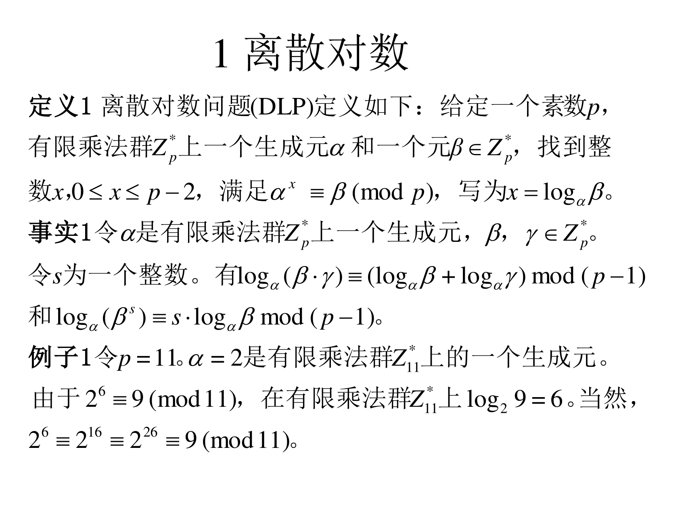
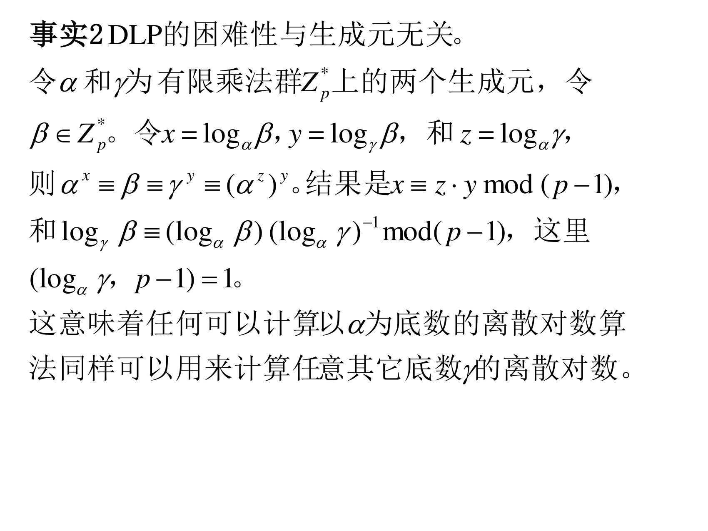
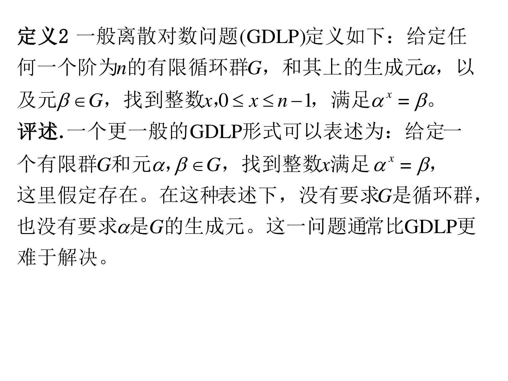

6.1 离散对数
6.1.1 定义 1：离散对数问题（DLP）
（PPT 第 4 页）
定义 1（DLP）：给定一个素数 p，有限乘法群 Zp∗ 上一个生成元 α 和一个元 β∈Zp∗，找到整数 x，0≤x≤p−2，满足
αx≡β(modp)
写为 x=logαβ。

翻译成人话：普通对数是这样——23=8，所以 log28=3。给你底数 2 和结果 8，问你"2 的几次方是 8"。
离散对数就是把乘法换成模 p 乘法之后问同样的问题：给你底数 α 和结果 β，问"α 的几次方模 p 等于 β"。
三个细节，别漏：
- "离散"是什么意思：普通对数的指数可以是任意实数（连续），这里指数只能是整数（离散）。
- 为什么 x 限定在 0≤x≤p−2：因为 αp−1≡1（费马小定理），指数是以 p−1 为周期的。若不限定范围，同一个 β 会对应无穷多个 x（x、x+(p−1)、x+2(p−1)……），答案就不唯一了。这个"必须规定范围"的细节，在 6.4 节会变成一个真实的坑，先记住它。
- "α 是生成元"保证了答案一定存在：因为生成元的幂次能走遍整个群。
6.1.2 事实 1：对数运算法则
（PPT 第 4 页）
事实 1：令 α 是有限乘法群 Zp∗ 上一个生成元，β,γ∈Zp∗，令 s 为一个整数。则
logα(β⋅γ)≡(logαβ+logαγ)mod(p−1)
logα(βs)≡s⋅logαβmod(p−1)
翻译成人话：就是中学对数的两条运算法则，一模一样：
- 乘法变加法：log(βγ)=logβ+logγ
- 幂次提到前面：log(βs)=slogβ
唯一的区别：右边算完要 mod(p−1)。原因是双方都是"指数"（在模 p−1 的加法群里运算），指数溢出 p−1 就会绕回原点。
为什么这条"显然"的规则很重要：因为它意味着离散对数把"模 p 的乘法"翻译成了"模 p−1 的加法"。后面所有算法（小步大步、Pohlig-Hellman、指数积分）的建模都靠它：把 αx=β 变成"关于 x 的线性同余方程"。
6.1.3 例子 1
（PPT 第 4 页）
例子 1：令 p=11，α=2 是 Z11∗ 上的一个生成元。由于 26≡9(mod11)，在 Z11∗ 上 log29=6。当然，26≡216≡226≡9(mod11)。
翻译成人话：第一个等式就是"查表"：26=64，64=5×11+9，所以 26≡9。第二个等式提醒你答案不唯一——216=26⋅210≡9⋅1=9（因为 210≡1）。所以我们人为规定离散对数取 [0,p−2] 这个"主值"。
这也是 6.4 节比特承诺能成立的技术前提：讨论"离散对数模 4 是多少"之前，必须先约定"取哪个离散对数"。
6.1.4 事实 2：DLP 的困难性与生成元无关
（PPT 第 5 页）
事实 2：令 α 和 γ 为有限乘法群 Zp∗ 上的两个生成元，令 β∈Zp∗。令 x=logαβ，y=logγβ，z=logαγ，则 αx≡β≡γy≡(αz)y。结果是
x≡z⋅ymod(p−1),logγβ≡(logαβ)(logαγ)−1mod(p−1)
这里 (logαγ, p−1)=1。
这意味着任何可以计算以 α 为底数的离散对数算法，同样可以用来计算任意其它底数 γ 的离散对数。

翻译成人话：这就是换底公式。中学里 logγβ=logαγlogαβ，这里把除法改成"乘逆元"（因为除法在模运算里就是乘逆元）。
为什么要专门写成一条"事实"：因为它给出一个结论——"以谁为底"这件事不影响问题的难度。如果某个算法能算以 2 为底的离散对数，它立马能算以 3 为底、以 5 为底的。所以后面讨论 DLP 的困难性时，我们不需要关心生成元怎么选，只需要关心 p 有多大、p−1 有没有大素因子。
证明看一遍（PPT 用一行写完，这里展开）：
- 设 x=logαβ（即 β=αx）、z=logαγ（即 γ=αz）。
- 则 β=γy=(αz)y=αzy，两边取以 α 为底的对数（指数在模 p−1 下比较）：x≡zy(modp−1)。
- 于是 y≡x⋅z−1(modp−1)，即 logγβ≡(logαβ)(logαγ)−1。
- 这里要求 z=logαγ 与 p−1 互素，否则 z 在模 p−1 下没有逆元，公式不成立。
补为什么"没有逆元"就要出问题：模 n 下 a 有逆元 ⟺gcd(a,n)=1。比如模 10 下 4 和 10 不互素，4x≡1 无解。所以事实 2 的结论里要带一句"(logαγ,p−1)=1"。
6.1.5 定义 2：一般离散对数问题（GDLP）
（PPT 第 6 页）
定义 2（GDLP）：给定任何一个阶为 n 的有限循环群 G，和其上的生成元 α，以及元 β∈G，找到整数 x，0≤x≤n−1，满足 αx=β。

评述：一个更一般的 GDLP 形式可以表述为：给一个有限群 G 和元 α,β∈G，找到整数 x 满足 αx=β，这里假定存在。在这种表述下，没有要求 G 是循环群，也没有要求 α 是 G 的生成元。这一问题通常比 GDLP 更难于解决。
翻译成人话：
- DLP：只在 (Zp∗,×) 里玩。
- GDLP：换到"任何有限循环群"里玩——比如椭圆曲线上的点群（ECC 就是这么来的）、或者 Zp∗ 的子群（DSA 用的）。
- 评述说的"更一般"：连"循环"和"生成元"都不要求了，问题更难。注意"更难"是好事——对密码学来说，攻击者面对的越难越好。
本讲后面只讨论 DLP（即 Zp∗ 上的版本），但你要知道结论可以搬到一般循环群。